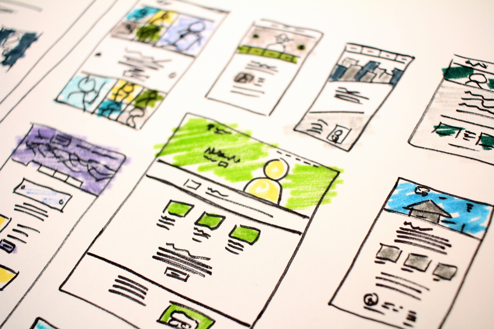

Projects
Majority of my current projects are from my coursework and personal experimentation. Presently featuring my foundational core building blocks. A work in progress- just like my skills. They are all my earliest works but not my last. In each and every single one of them, I had gained valuable experience and knowledge. These projects reflect my journey and growth as a developer while I continue to actively expand my portfolio. There is more to come as I take on more challenges.

Harborview Farmers Market
In this project, the HTML structure was provided but the CSS was not. Therefore the main target of this project was to apply CSS styling to the existing HTML structure in a visually organized webpage. The project required me to demonstrate box model, basic CSS layout, typography, visual hierarchy, class, ID selectors, list selectors, and design coherence.
Batman & Wonder Woman
This was a creative project with more independence in design and implementation. It was design to show case my skill in both HTML and CSS fresh with no prompts. In here this project the criteria was to show a organized semantic HTML and layout structure, display use of flexbox, CSS grid, content hierarchy, and images.